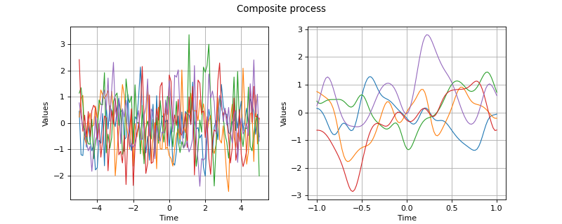

CompositeProcess¶
(Source code, png, hires.png, pdf)
{kind=link}
{kind=link}

-
class
CompositeProcess(*args)¶ Process obtained by transformation.
- Parameters
- fdyn
FieldFunction A field function.
- inputProc
Process The input process.
- fdyn
Notes
A composite process is the image of process
 by the field function
by the field function  :
:
where
 and
and  , defined by:
, defined by:
with
 and
and  .
.The process
 is defined on the domain
is defined on the domain  associated to the mesh
associated to the mesh  .
.Examples
Create the process X:
>>> import openturns as ot >>> amplitude = [1.0, 1.0] >>> scale = [0.2, 0.3] >>> myCovModel = ot.ExponentialModel(scale, amplitude) >>> myMesh = ot.IntervalMesher([100]*2).build(ot.Interval([0.0]*2, [1.0]*2)) >>> myXProcess = ot.GaussianProcess(myCovModel, myMesh)
Create a spatial field function
 associated to
associated to  where
where  :
:>>> g = ot.SymbolicFunction(['x1', 'x2'], ['x1^2', 'x1+x2']) >>> nSpat = 2 >>> gdyn = ot.ValueFunction(g, myMesh)
Create the Y process
 :
:>>> myYProcess = ot.CompositeProcess(gdyn, myXProcess)
Add the trend
 where
where  :
:>>> f = ot.SymbolicFunction(['x1', 'x2'], ['1+2*x1', '1+3*x2^2']) >>> fTrend = ot.TrendTransform(f, myMesh)
Create the process
 :
:>>> myYProcess2 = ot.CompositeProcess(fTrend, myXProcess)
Apply the Box Cox transformation
 where
where  :
:>>> h = ot.BoxCoxTransform([3.0, 0.0]) >>> hBoxCox = ot.ValueFunction(h, myMesh)
Create the Y process
 :
:>>> myYProcess3 = ot.CompositeProcess(hBoxCox, myXProcess)
- Attributes
thisownThe membership flag
Methods
Get the antecedent process.
Accessor to the object’s name.
Get a continuous realization.
Accessor to the covariance model.
Get the description of the process.
Get the field function.
getFuture(*args)Prediction of the
 future iterations of the process.
future iterations of the process.getId()Accessor to the object’s id.
Get the dimension of the domain
 .
.getMarginal(indices)Get the
 marginal of the random process.
marginal of the random process.getMesh()Get the mesh.
getName()Accessor to the object’s name.
Get the dimension of the domain
.Get a realization of the process.
getSample(size)Get
 realizations of the process.
realizations of the process.Accessor to the object’s shadowed id.
Get the time grid of observation of the process.
getTrend()Accessor to the trend.
Accessor to the object’s visibility state.
hasName()Test if the object is named.
Test if the object has a distinguishable name.
Test whether the process is composite or not.
isNormal()Test whether the process is normal or not.
Test whether the process is stationary or not.
setDescription(description)Set the description of the process.
setMesh(mesh)Set the mesh.
setName(name)Accessor to the object’s name.
setShadowedId(id)Accessor to the object’s shadowed id.
setTimeGrid(timeGrid)Set the time grid of observation of the process.
setVisibility(visible)Accessor to the object’s visibility state.
-
__init__(*args)¶ Initialize self. See help(type(self)) for accurate signature.
-
getClassName()¶ Accessor to the object’s name.
- Returns
- class_namestr
The object class name (object.__class__.__name__).
-
getContinuousRealization()¶ Get a continuous realization.
- Returns
- realization
Function According to the process, the continuous realizations are built:
either using a dedicated functional model if it exists: e.g. a functional basis process.
or using an interpolation from a discrete realization of the process on
 : in dimension
: in dimension  , a linear interpolation and in
dimension
, a linear interpolation and in
dimension  , a piecewise constant function (the value at a
given position is equal to the value at the nearest vertex of the mesh of
the process).
, a piecewise constant function (the value at a
given position is equal to the value at the nearest vertex of the mesh of
the process).
- realization
-
getCovarianceModel()¶ Accessor to the covariance model.
- Returns
- cov_model
CovarianceModel Covariance model, if any.
- cov_model
-
getDescription()¶ Get the description of the process.
- Returns
- description
Description Description of the process.
- description
-
getFunction()¶ Get the field function.
- Returns
- fdyn
FieldFunction The field function
 .
.
- fdyn
-
getFuture(*args)¶ Prediction of the
future iterations of the process.- Parameters
- stepNumberint,

Number of future steps.
- sizeint,
 , optional
, optional Number of futures needed. Default is 1.
- stepNumberint,
- Returns
- prediction
ProcessSampleorTimeSeries - future iterations of the process.
If
 , prediction is a
, prediction is a TimeSeries. Otherwise, it is aProcessSample.
- prediction
-
getId()¶ Accessor to the object’s id.
- Returns
- idint
Internal unique identifier.
-
getInputDimension()¶ Get the dimension of the domain
.- Returns
- nint
Dimension of the domain
: .
-
getMarginal(indices)¶ Get the
marginal of the random process.- Parameters
- kint or list of ints

Index of the marginal(s) needed.
- kint or list of ints
- Returns
- marginals
Process Process defined with marginal(s) of the random process.
- marginals
-
getName()¶ Accessor to the object’s name.
- Returns
- namestr
The name of the object.
-
getOutputDimension()¶ Get the dimension of the domain
.- Returns
- dint
Dimension of the domain
.
-
getRealization()¶ Get a realization of the process.
- Returns
- realization
Field Contains a mesh over which the process is discretized and the values of the process at the vertices of the mesh.
- realization
-
getSample(size)¶ Get
realizations of the process.- Parameters
- nint,

Number of realizations of the process needed.
- nint,
- Returns
- processSample
ProcessSample - realizations of the random process. A process sample is a
collection of fields which share the same mesh
 .
.
- processSample
-
getShadowedId()¶ Accessor to the object’s shadowed id.
- Returns
- idint
Internal unique identifier.
-
getTimeGrid()¶ Get the time grid of observation of the process.
- Returns
- timeGrid
RegularGrid Time grid of a process when the mesh associated to the process can be interpreted as a
RegularGrid. We check if the vertices of the mesh are scalar and are regularly spaced in but we don’t check if the connectivity of the mesh is conform
to the one of a regular grid (without any hole and composed of ordered
instants).
but we don’t check if the connectivity of the mesh is conform
to the one of a regular grid (without any hole and composed of ordered
instants).
- timeGrid
-
getTrend()¶ Accessor to the trend.
- Returns
- trend
TrendTransform Trend, if any.
- trend
-
getVisibility()¶ Accessor to the object’s visibility state.
- Returns
- visiblebool
Visibility flag.
-
hasName()¶ Test if the object is named.
- Returns
- hasNamebool
True if the name is not empty.
-
hasVisibleName()¶ Test if the object has a distinguishable name.
- Returns
- hasVisibleNamebool
True if the name is not empty and not the default one.
-
isComposite()¶ Test whether the process is composite or not.
- Returns
- isCompositebool
True if the process is composite (built upon a function and a process).
-
isNormal()¶ Test whether the process is normal or not.
- Returns
- isNormalbool
True if the process is normal.
Notes
A stochastic process is normal if all its finite dimensional joint distributions are normal, which means that for all
 and
and
 , with
, with  , there is
, there is
 and
and
 such that:
such that:
where
 ,
,
 and
and
 and
and
 is the symmetric matrix:
is the symmetric matrix:
A Gaussian process is entirely defined by its mean function
 and its
covariance function
and its
covariance function  (or correlation function
(or correlation function  ).
).
-
isStationary()¶ Test whether the process is stationary or not.
- Returns
- isStationarybool
True if the process is stationary.
Notes
A process
 is stationary if its distribution is invariant by
translation:
is stationary if its distribution is invariant by
translation:  ,
,
 ,
,
 , we have:
, we have:
-
setDescription(description)¶ Set the description of the process.
- Parameters
- descriptionsequence of str
Description of the process.
-
setName(name)¶ Accessor to the object’s name.
- Parameters
- namestr
The name of the object.
-
setShadowedId(id)¶ Accessor to the object’s shadowed id.
- Parameters
- idint
Internal unique identifier.
-
setTimeGrid(timeGrid)¶ Set the time grid of observation of the process.
- Returns
- timeGrid
RegularGrid Time grid of observation of the process when the mesh associated to the process can be interpreted as a
RegularGrid. We check if the vertices of the mesh are scalar and are regularly spaced in but we don’t check if the connectivity of the mesh is conform
to the one of a regular grid (without any hole and composed of ordered
instants).
- timeGrid
-
setVisibility(visible)¶ Accessor to the object’s visibility state.
- Parameters
- visiblebool
Visibility flag.